事序 SHIXU
花了半年，手搓了一款叫「事序」的 Windows 待办软件。
平时可以贴便签、列待办、写图文日记，也能在日历里看安排。
遇到工程协调、问题排查、材料申报这类要反复跟进的事，可以单独建一个「事项」，把每次进展、下一步待办、截图和附件都放进去。隔几周再打开，也能看清上次跟到哪一步、当时是怎么定的、还有什么待确认。
需要汇报或交接时，可以按模板把事项和过程记录导出成 PDF 或 Word，也可以连同原始附件一起打包发给接手的人。
事序的资料保存在独立的本地文件夹里，可以整库备份、用网盘同步，也可以复制到另一台电脑接着用。

下载与环境 · 功能 · 功能配图 · 首次使用 · 反馈与支持
下载与环境
个人开发，免费使用、非开源。本仓库仅提供安装包、说明和更新信息，不提供应用源码。
支持 Windows 11 x64；Win10 已验证环境为 Windows 10 专业版 22H2 x64（19045.6456），本版已包含兼容修复。其它 Win10 版本、LTSC、ARM 和跨屏尚未验证。
下载事序 0.3.7 测试版（Windows 11 x64 / Win10 22H2 x64）。
功能
- 总览工作台 — 把日历、待办、关注事项和常用工具放在一起，按需调整组件。
- 待办与四象限 — 用列表查看详情，用四象限安排优先级。两个视图共用同一份待办。
- 日历 — 按年、月、周查看排期，设置重复待办和提醒。
- 快速收集 — 用快捷键把其他软件里的文字、图片和文件存成收集卡。
- 收集板 — 分区整理卡片，从卡片内容创建待办或事项。
- 随记 — 按日期写图文记录，可以回看、导出和打印。
- 事项与过程 — 在同一个事项里记录进展、经过、待办和相关材料。
- 资料包交接 — 把所选事项、过程记录和原始附件打包交接。
- 导出模板 — 保存常用版式和字段，换一组内容继续生成 PDF 或 Word。
- 主题与配色 — 自选主色、背景和明暗模式。
- 独立事项库 — 备份或换机时，可以把记录、材料和库内布局一起带走。
- AI 连接 — 通过 MCP 连接兼容的 AI 客户端读取当前事项库。授权写入后，可创建或修改记录。
功能配图
点击图片查看原图。
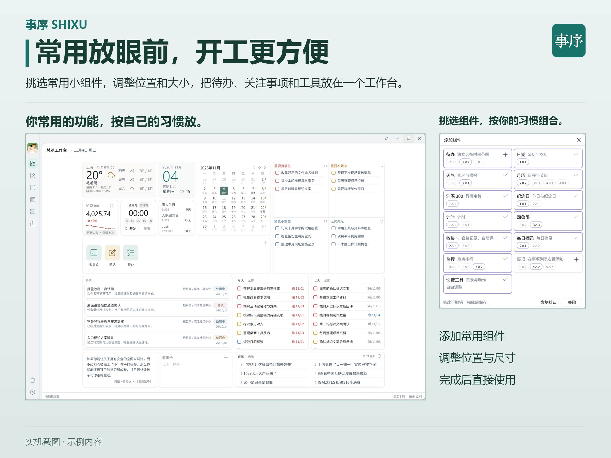 总览工作台 |
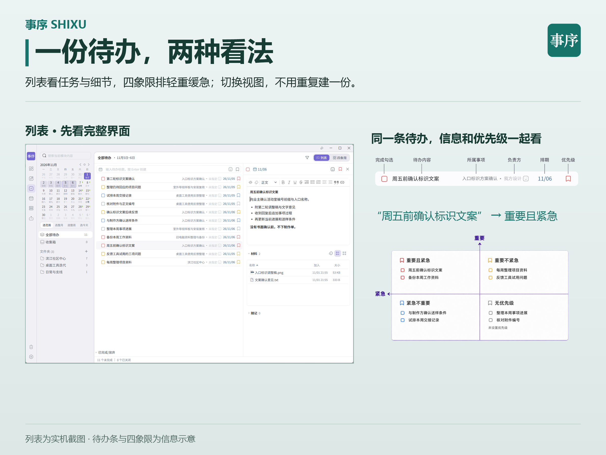 待办列表与四象限 |
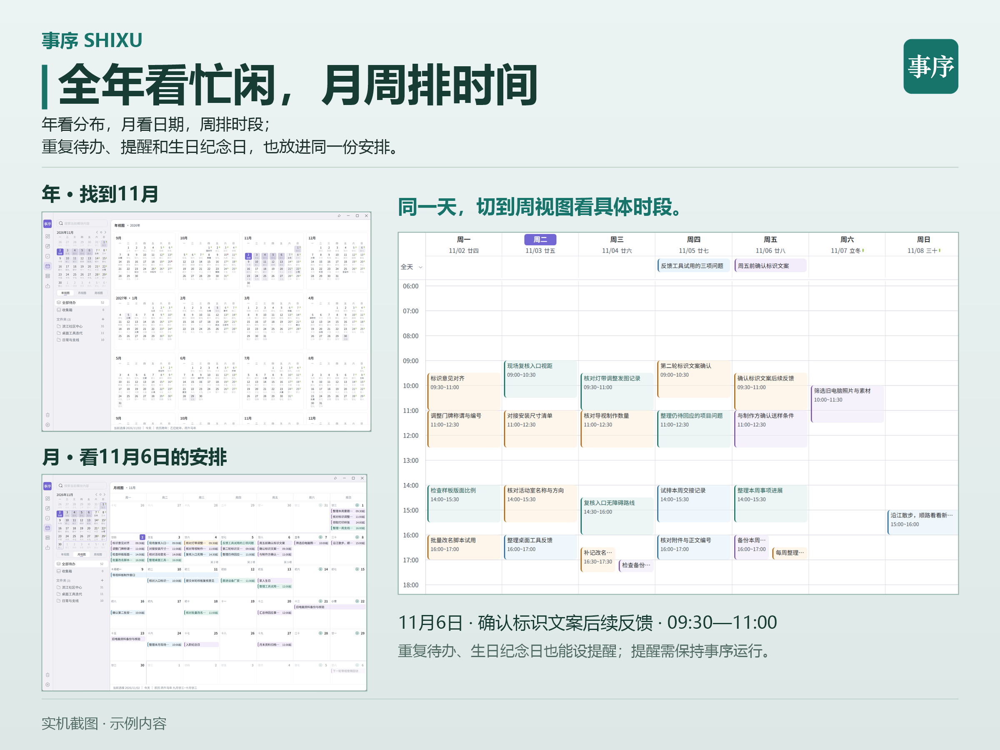 年、月、周日历 |
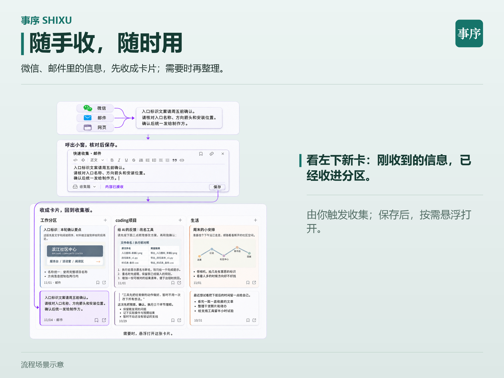 快速收集 |
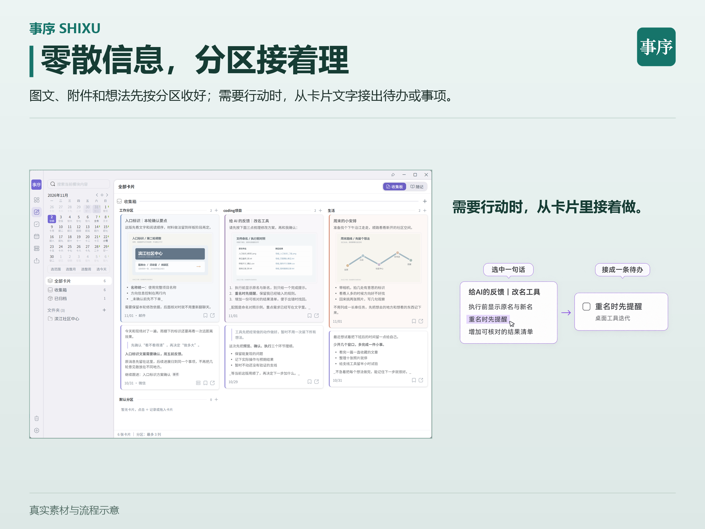 收集板 |
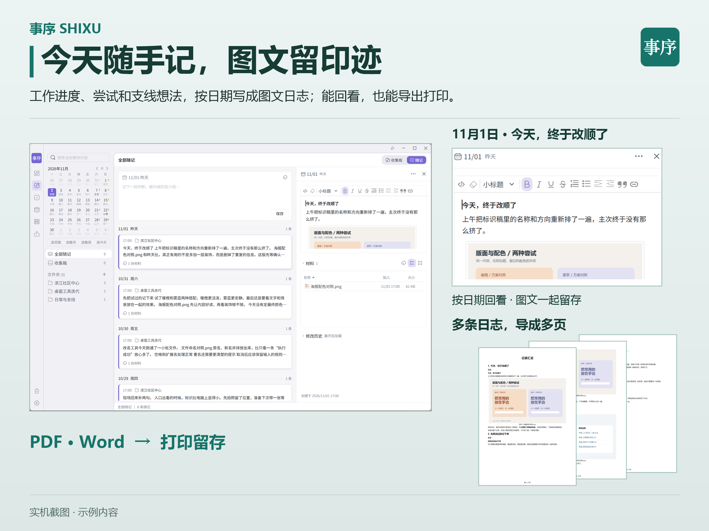 图文随记 |
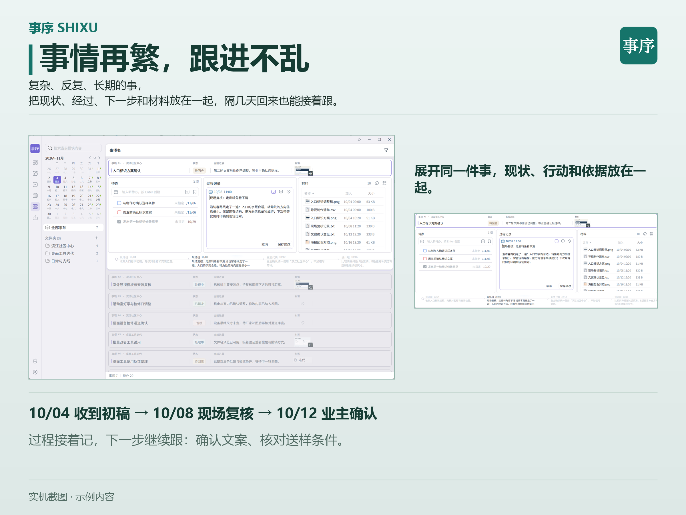 事项与过程 |
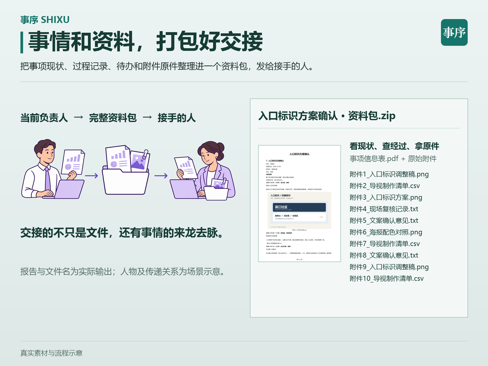 资料包交接 |
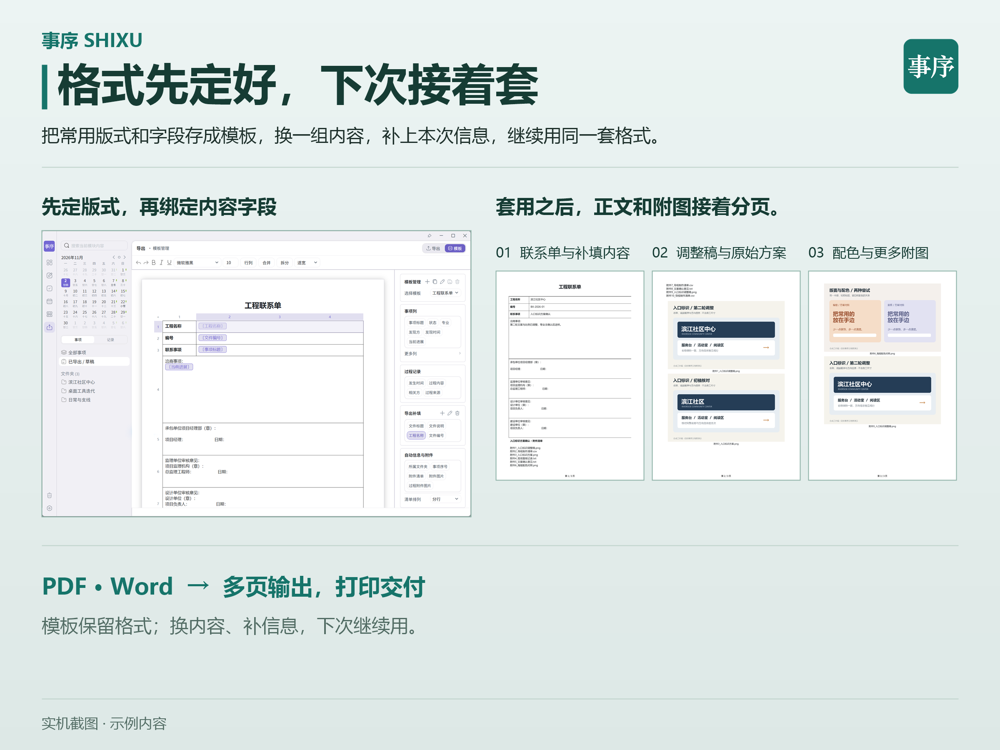 导出模板 |
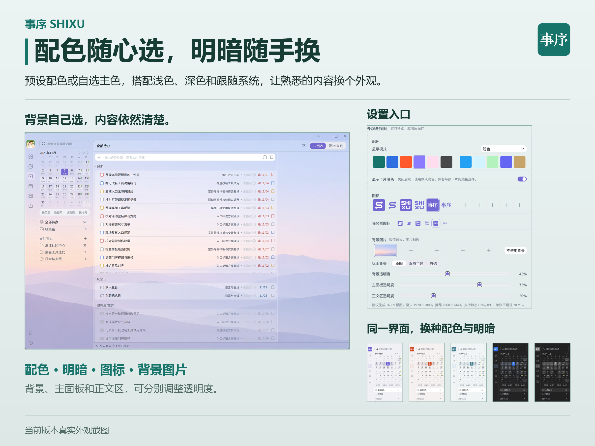 主题与配色 |
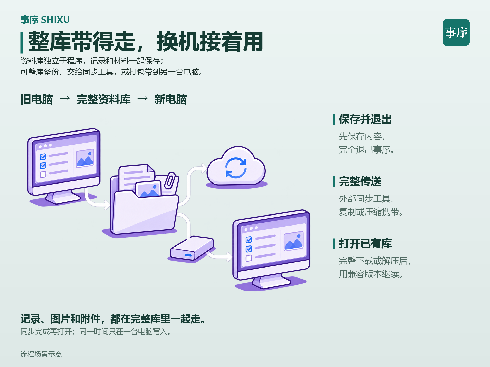 独立事项库 |
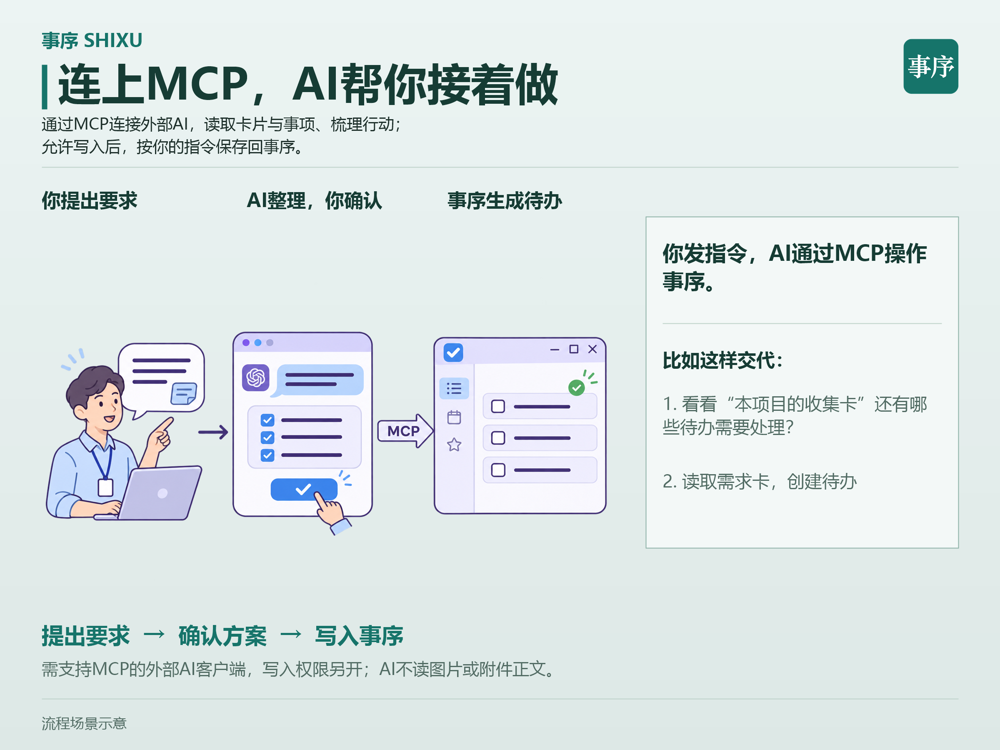 通过 MCP 连接 AI |


首次使用
- 第一次打开时，新建事项库。如果已有资料，选择「打开已有事项资料库」，选中整个库文件夹。
- 新建后进入总览，点击「快速上手」，打开第一张示例卡。
- 跟着卡片做一次操作，例如把一段文字收成卡片，或安排一条待办。
反馈与支持
交流与反馈
- QQ 群「事序-交流」 · 89641678
- 反馈邮箱 · w.jan@FOXmail.com
反馈问题时，可以附上事序版本和复现步骤。
支持事序
如果事序对你有帮助，欢迎在 GitHub 仓库点亮 Star，也可以扫码赞助。
微信 |
支付宝 |